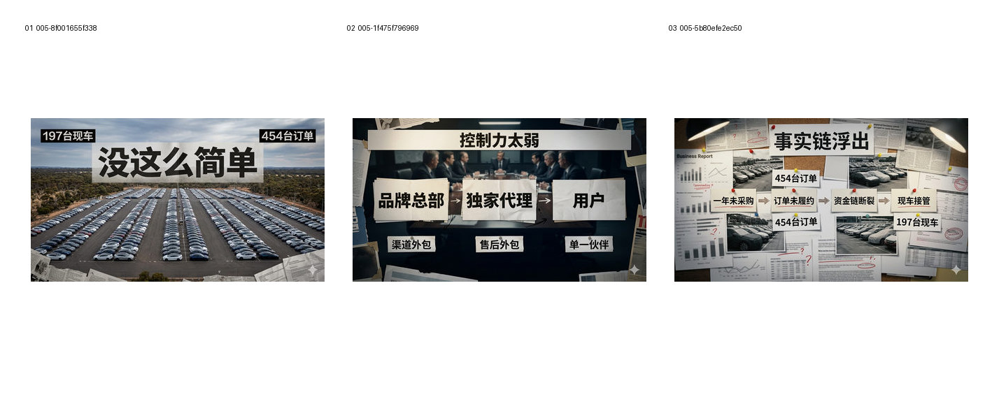
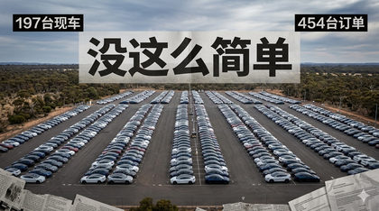
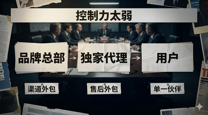
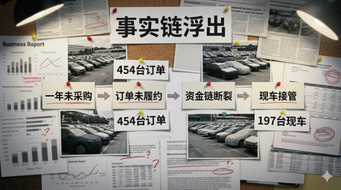

测试 Editorial Documentary 是否能形成更平衡的事实链与调查资料表达。
Evidence: references/text2pic/conversations/005-视频制作流程建议/IMAGE_MANIFEST.md § B3｜Prompt 3.0：Editorial Documentary


f845e998b9a7f536…

ac882dd9eeeba88c…

9c18116f5f0503f1…